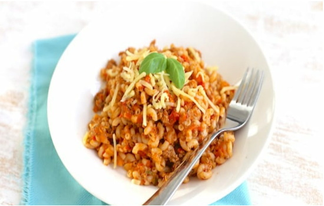

Recepten
Zet een pan water op en kook de macaroni volgens de bereidingswijze op het pak.Snijd de ui, knoflook, prei, paprika en tomaten in stukjes. Giet een scheutje olie in een pan en bak de ui, knoflook, prei en paprika aan.
Voeg na circa 3-4 minuten de tomaten, kruiden en ketchup toe. Laat het geheel circa 10-15 minuten zachtjes pruttelen.
Vervolgens pureer je de saus (dit hoeft natuurlijk niet).
Bak in een andere pan het gehakt rul en voeg dit daarna toe aan de tomatensaus, net zoals de macaroni.
Meng alles goed door elkaar.
Schep de macaroni op twee borden en strooi nog wat geraspte kaas en eventueel basilicum over de macaroni.